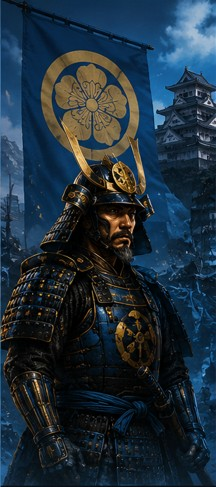

A fictional analytics command center exploring clan power, territory control, economic strength,
battle efficiency, and political stability during Japan’s warring states era.
Temporal Status
1560
Primary Lens
Clan Expansion
Mode
Peace Analysis
Clan Expansion Map
Select a clan and move the year slider to trace territorial movement
1560

Oda Clan
Leader: Oda Nobunaga
Strength: Military modernization and aggressive expansion.
Weakness: High political instability.
Hover over a province marker to view regional intelligence.
Live Battle Intelligence
⚔ Oda forces advancing toward Kyoto
Clan Power Over Time
Animated Sengoku-era power index inspired by historical momentum
1467
12
Clans Tracked
68
Provinces Analyzed
47%
Avg Rebellion Risk
Clan Power Distribution
Territory · Military · Economy · Alliance Strength
Predictive Shogunate Stability Engine
Interactive fictional ML-style forecast console
Economic Stress
Military Losses
Alliance Instability
Collapse Probability
55%
Strategic Clan Rankings
Composite power index
徳
Tokugawa
94 Power
織
Oda
91 Power
武
Takeda
86 Power
上
Uesugi
82 Power
島
Shimazu
78 Power
Economic Output
Estimated rice production index
Clan Comparison Mode
Side-by-side strategic analytics by clan
Oda
Military: 96
Economy: 80
Alliance Stability: 72
Campaign Momentum: 91
Tokugawa
Military: 88
Economy: 95
Alliance Stability: 91
Campaign Momentum: 94
Takeda
Military: 94
Economy: 70
Alliance Stability: 65
Campaign Momentum: 86
Risk Forecast
Simulated instability indicators
Rebellion Risk
63%
Alliance Betrayal
41%
Economic Strain
58%
Battle Efficiency
Win rate by clan
Sacred Timeline
Key power shifts and strategic events
1467
Onin War Begins
Central authority weakens, accelerating regional conflict and clan militarization.
1560
Battle of Okehazama
Oda Nobunaga’s surprise victory shifts the balance of power and signals a new strategic era.
1575
Battle of Nagashino
Firearm tactics alter battlefield efficiency and reduce cavalry dominance.
1600
Battle of Sekigahara
Tokugawa victory consolidates power and sets the foundation for long-term political stability.
How This Was Built
Portfolio project technical stack
Built with HTML, CSS, JavaScript, Chart.js, interactive data storytelling,
UX analytics design, fictional predictive modeling logic, and custom dashboard theming.
Historical events are inspired by Sengoku-era Japan. Analytics metrics are fictional
and designed to demonstrate dashboard thinking, model interpretation, and executive-style reporting.